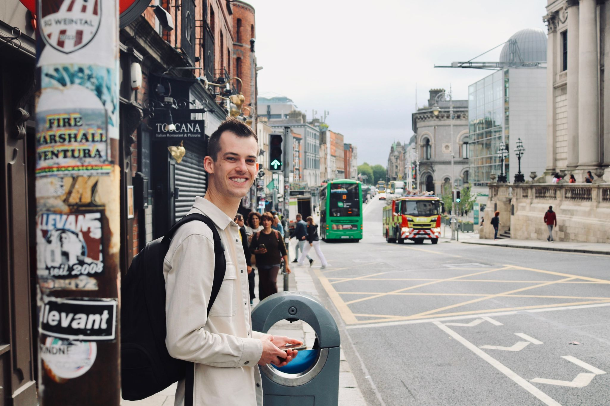

I'm Ward de Groot, a UX Designer based in Noord-Brabant, the Netherlands. With a background in Industrial Design from Eindhoven University of Technology, my interests in psychology, strategy and technology drive my design choices.
Currently at Gynzy, I make teachers' lives a little better every day — translating research insights and data into user-friendly interfaces for an educational platform used by thousands. I've also co-founded a sustainable wine business and published academic research in dementia care.

I believe in starting with the bigger picture. Understanding business goals, user needs, and technical constraints before diving into pixels. This helps me align teams and create designs that are both meaningful and feasible.
Numbers tell part of the story. I combine quantitative insights from tools like Amplitude with qualitative research — user interviews, usability tests, and contextual inquiry — to form a complete picture of what users need.
I'm passionate about design systems and scalable solutions. Rather than solving problems one screen at a time, I look for patterns and principles that can lift the quality of the entire product.
I actively explore how AI can enhance the design process — from rapid prototyping to generating design variations, analyzing user feedback at scale, and bridging the gap between design and engineering.